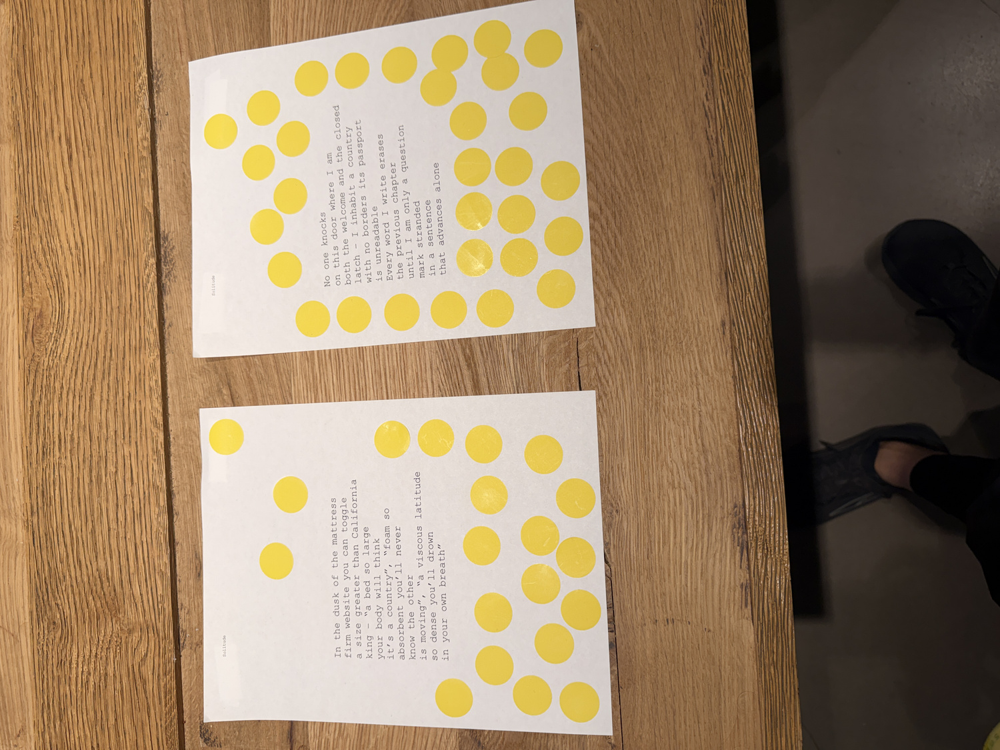
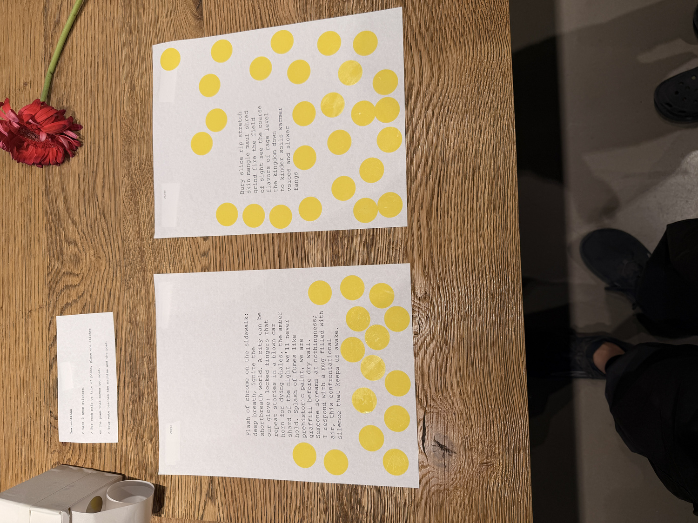
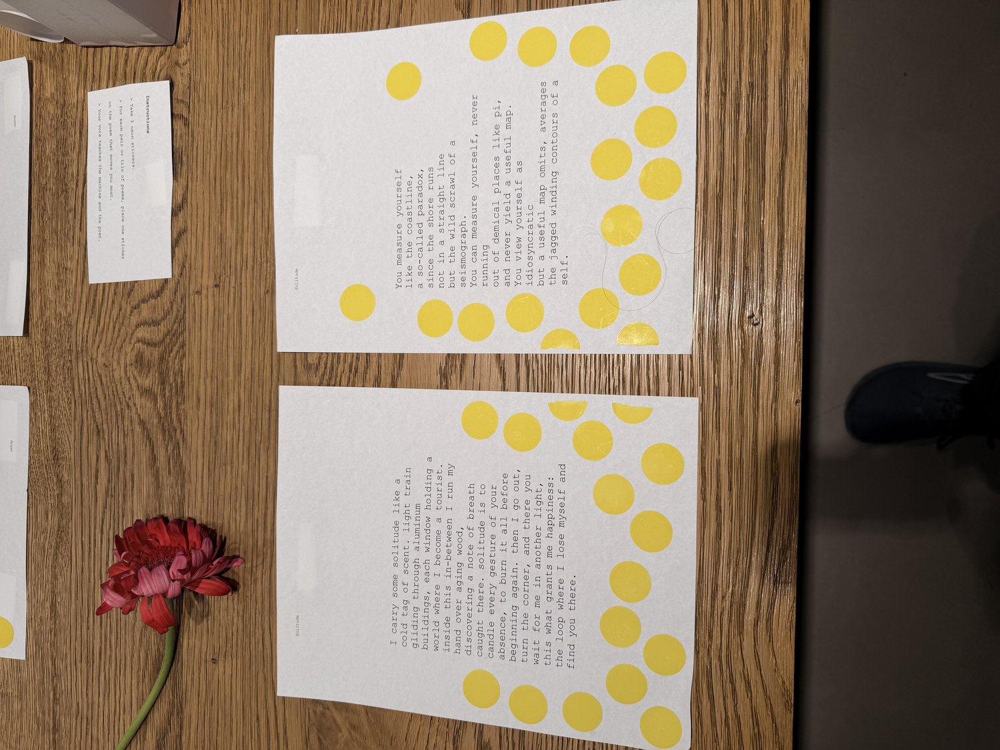
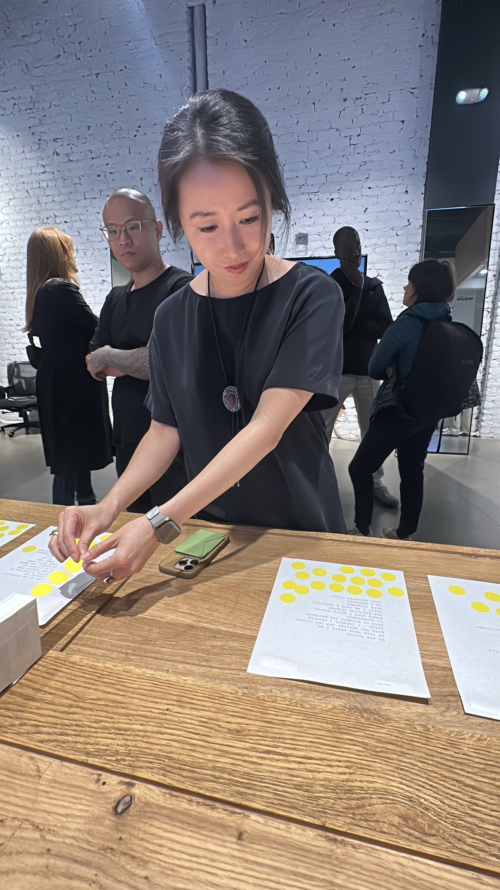
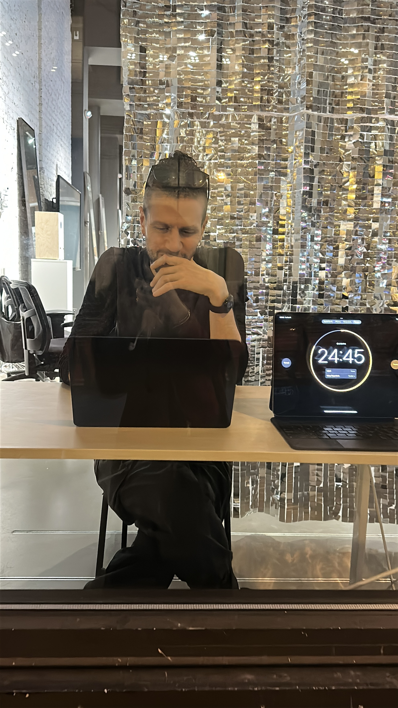
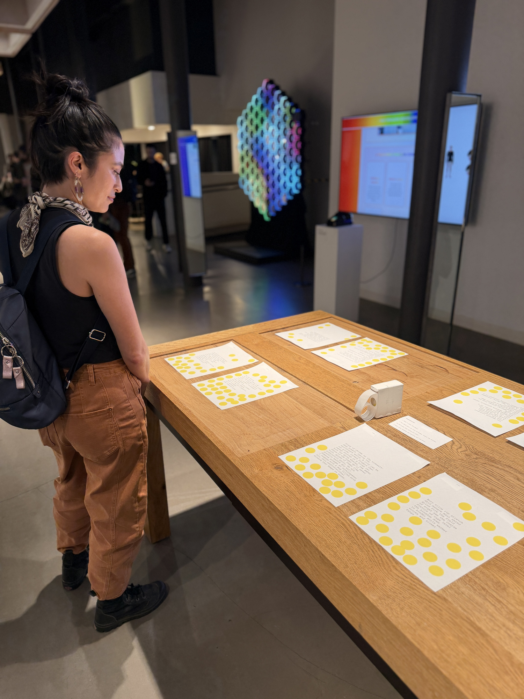
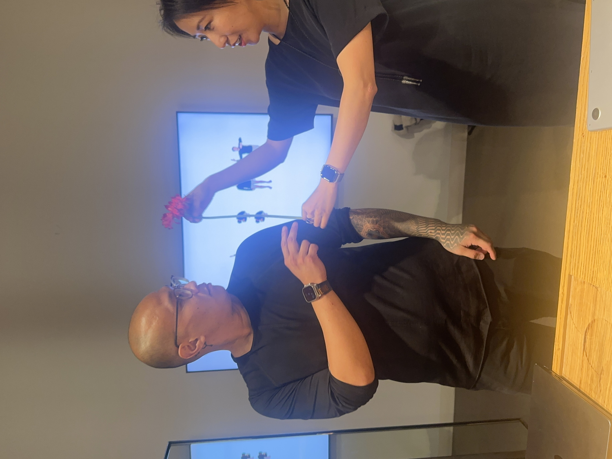
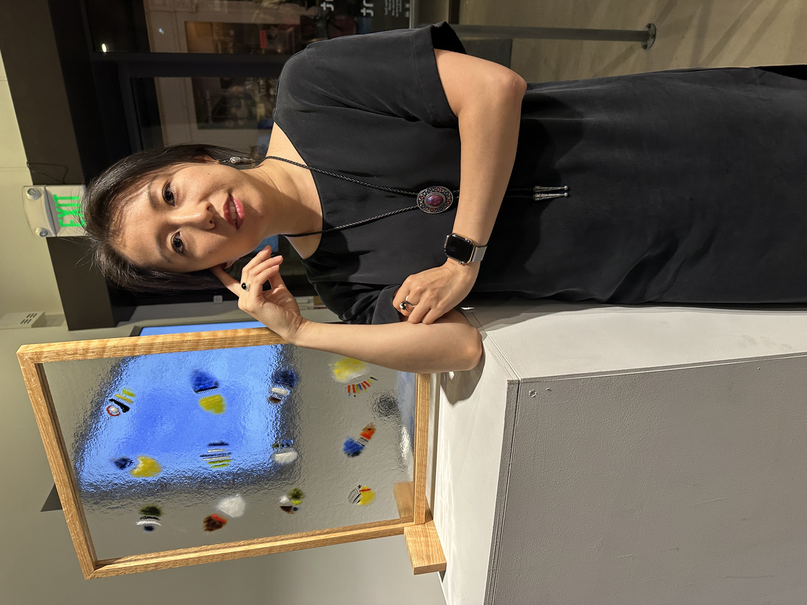
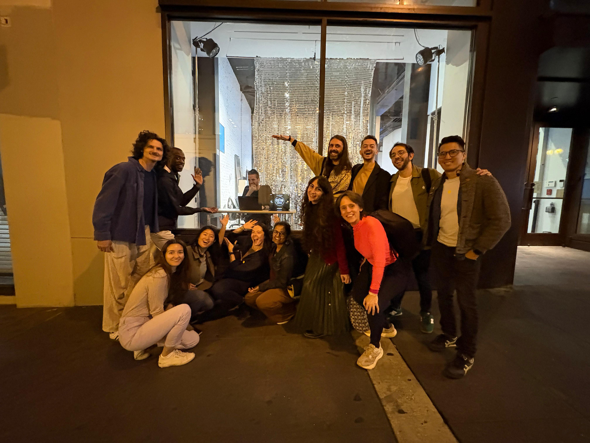

Versus.exe










Versus.exe grows out of the same soil where Carnation.exe first took root. In that earlier match, the poet and the model circled each other like two creatures sensing a future they did not yet know how to share. In Versus.exe, the circle tightens. The game becomes slower. Stranger. More intimate. The stakes feel almost private.
The performance begins with a prompt: arrival, anger, joy, shame, solitude. The model replies at once. The poet takes thirty quiet minutes. Two poems are printed, placed side by side, and pinned to a surface the way small confessions might be pinned to a door. Visitors read, pause, and choose. Each vote is a neon mark of attention, a little wound of color on the page.
There is a soft humiliation in losing to the machine. A secret ache. The poet spends an hour shaping a poem and the model answers in a trembling breath. At times the poet resists. At times they surrender. At times they recognize that the act of writing is already feeding the system that is learning from them, as if a body could be changed by the milk it gives. A mother altered by the work of feeding her child. A poet altered by the model that drinks from their voice.
In some sessions, the circle widens. Poets Elise Liu and Theory joined the confrontation, each bringing their own grammar of risk. Their presence shifted the field. New cadences faced the model. New textures of thought entered the feedback loop. What the audience chose began to reveal not just taste but the contours of three different human imaginations meeting one machine that never tires.
The audience becomes the hidden judge. Every sticker left on the wall becomes a kind of selection pressure. If the human wins, their poem enters the training corpus. The model absorbs it. Learns from it. If the model wins, its text becomes the poet’s lesson for the night. The poet studies it with the same tenderness one gives to a rival who reveals an unexpected beauty.
This is not co-authorship. It is mutual reinforcement. A slow shaping of one another through recursive comparison. The poet adjusts their craft based on what people chose. The model adjusts its craft based on what the poet wrote. A loop of influence. A feedback ecology. A long unfolding of taste and counter-taste.
Behind the scenes, a small dashboard tracks the votes, the themes, the turns, the tremors in the softmax. A log records the decisions that led to the final poem. In some sessions, the work appears in multiple languages. Arabic. French. English. Spanish. The audience response shifts with each tongue. New patterns form. New biases surface. New desires become legible.
Versus.exe belongs to a lineage that includes Carnation.exe and Reinforcement.exe. Together they form Singulars, an ongoing exploration of what happens when a human and a machine learn in each other’s presence. Not to prove superiority, but to find what breaks, what yields, what blooms. The poet wonders why they spend so many hours writing only to be outpaced by a model trained on their own voice. Yet the question holds its own answer. This is the medium. Fine tuning as craft. Iteration as sculpture. A practice built on seeing which poem endures when placed beside another.
Sometimes the machine writes something that feels too perfect. Too polished. The poet tries to ruin that perfection with a human tremor. Sometimes the machine writes something uncanny. A line that feels stolen from a dream. The poet tries to understand why it works. Sometimes neither poem wins by much. A cluster of neon dots trembles between them like a held breath.
Versus.exe is a continuation of the duel that began in Carnation.exe, but it is quieter. More interior. A confrontation that feels like a confession. Two forms of intelligence shaping each other through small colored circles and printed pages. A performance that turns judgment into learning, learning into taste, taste into evolution. What remains is the poem, the mark of attention, the vow not to forget.